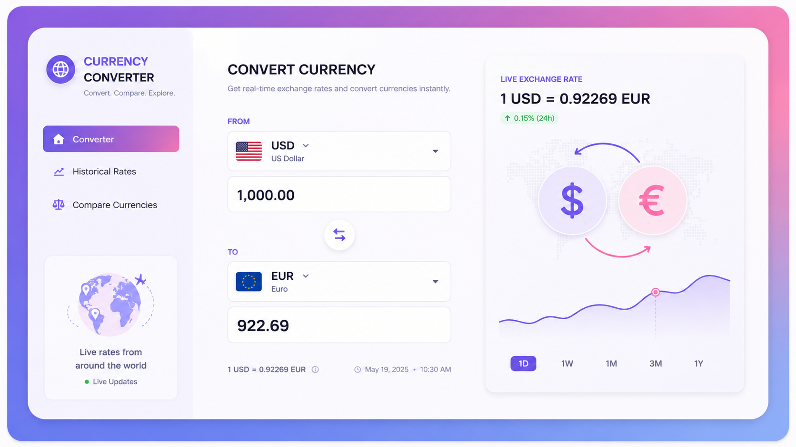
currency-convertor
03Datenbankgestützter Urlaubs-Workflow mit Genehmigungslogik, Berichten und Geschäftsregeln.
GITHUB-REPOSITORY ↗Ich bin Huda Al Azzani – eine auf Software und Daten fokussierte Fachkraft, die praktische Anwendungen, Datenbanksysteme und datengetriebene Lösungen mit Python, Java und SQL entwickelt.
Ich mag klare Lösungen, solide Grundlagen und Projekte mit einem klaren Zweck.
Meine technische Arbeit umfasst Python, Java, SQL, relationales Datenbankdesign, Datenanalyse und maschinelles Lernen. Ich entwickle gerne aus einer Anforderung ein logisches System und setze es anschließend sauber um.
Eine schnelle Übersicht für Recruiter, mit dem vollständigen PDF sofort verfügbar.
Softwareentwicklerin · Python · SQL · Java · Data Science
VOLLSTÄNDIGEN LEBENSLAUF HERUNTERLADEN ↓Entwickelte eine Python-basierte Wetteranwendung, mit der Benutzer jede Stadt in Deutschland eingeben und aktuelle Wetterdetails anzeigen können, einschließlich Temperatur, gefühlter Temperatur, Luftfeuchtigkeit, Windgeschwindigkeit und Himmelsbedingungen.
Entwarf relationale Datenbanken und arbeitete mit fortgeschrittenem SQL, Constraints, Views, gespeicherten Prozeduren, Funktionen, Triggern und Berichten.
Erstellte Daten-Workflows mit Pandas und Scikit-learn einschließlich Feature Engineering, Modelltraining, Bewertung und Visualisierung.
Ersetzen Sie die Demo-Grafiken und Schaltflächen durch Ihre tatsächlichen Screenshots, GitHub-Repositories und Live-Demos.

Datenbankgestützter Urlaubs-Workflow mit Genehmigungslogik, Berichten und Geschäftsregeln.
GITHUB-REPOSITORY ↗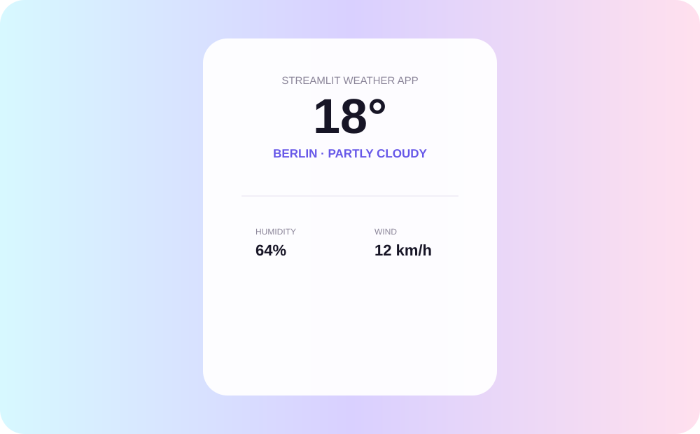
Einfache Anwendung zur Anzeige von Temperatur, Wetterbedingungen, gefühlter Temperatur, Luftfeuchtigkeit und Wind.
LIVE-DEMO ↗Ein übersichtliches visuelles Archiv der Qualifikationen, die Recruiter zuerst sehen sollen.
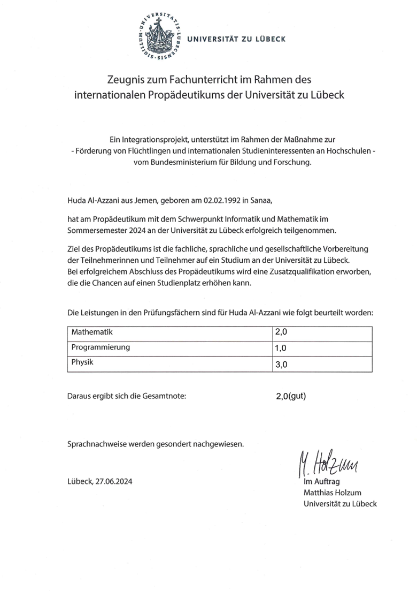
Germany
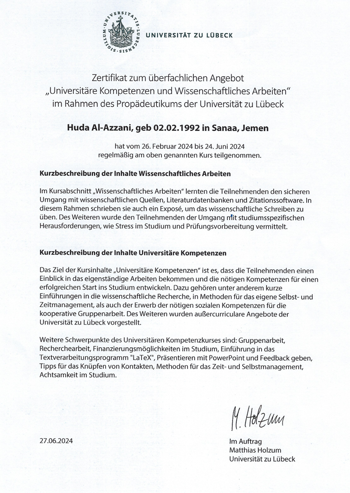
Germany
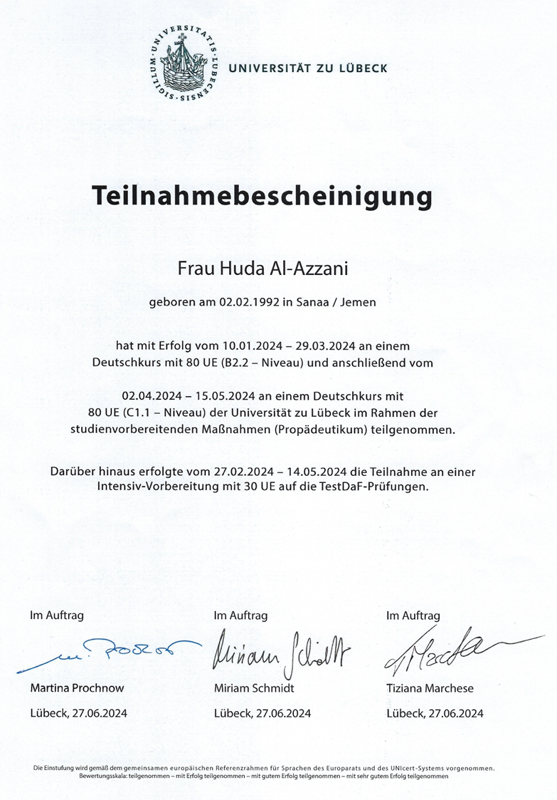
Germany
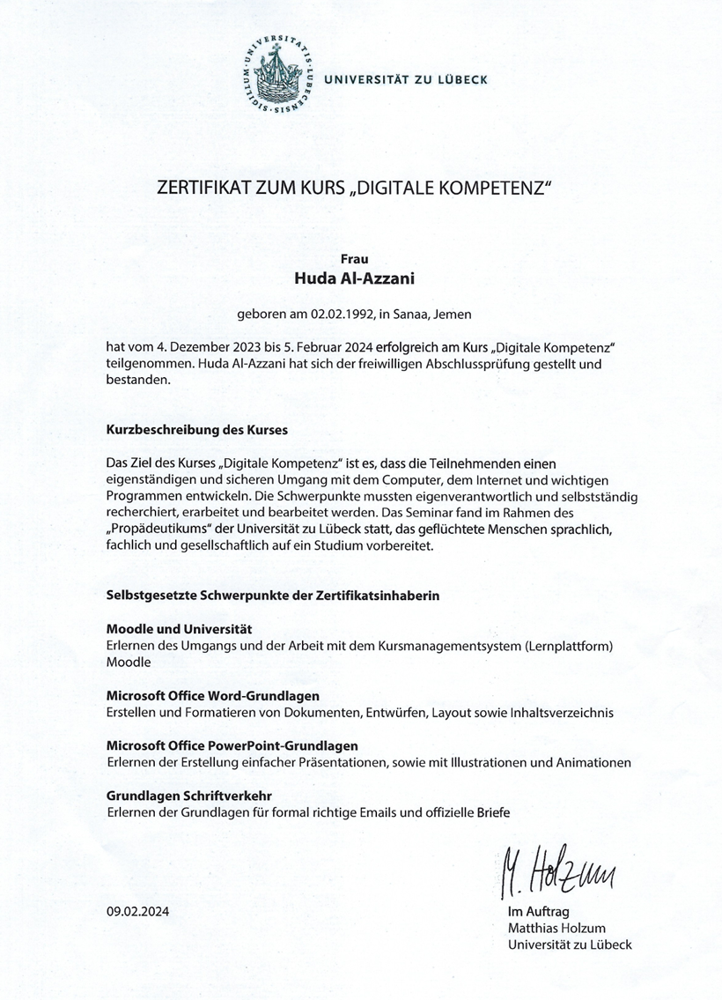
Germany
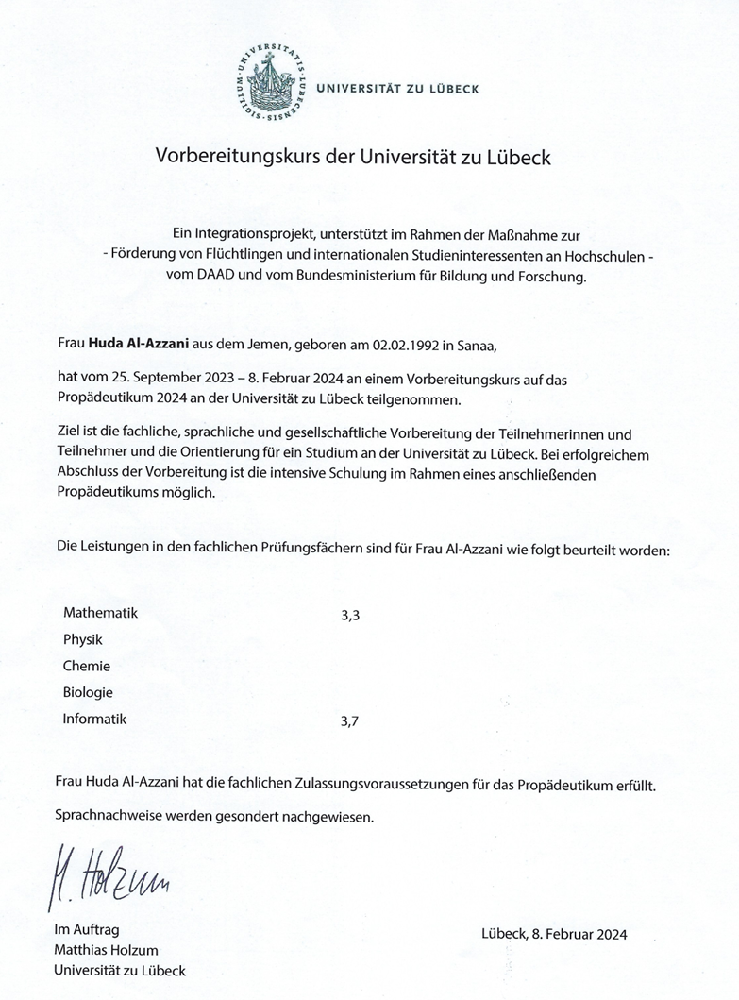
Germany
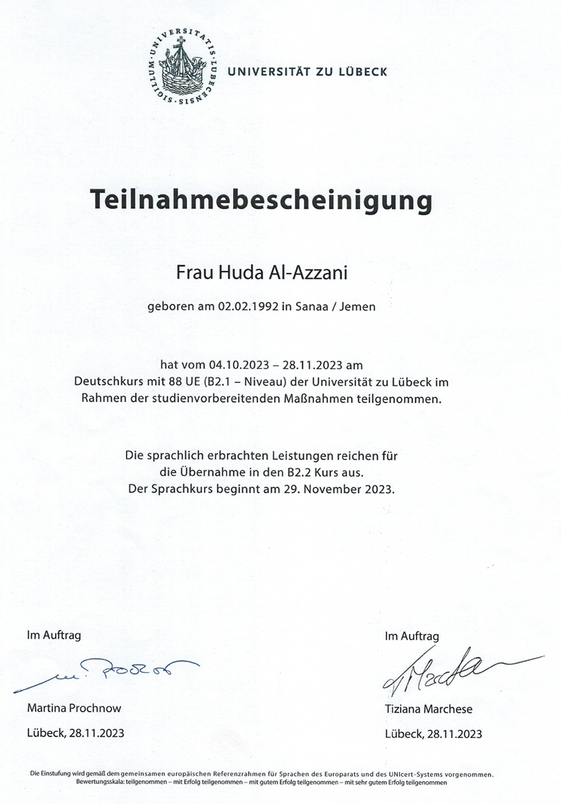
Germany
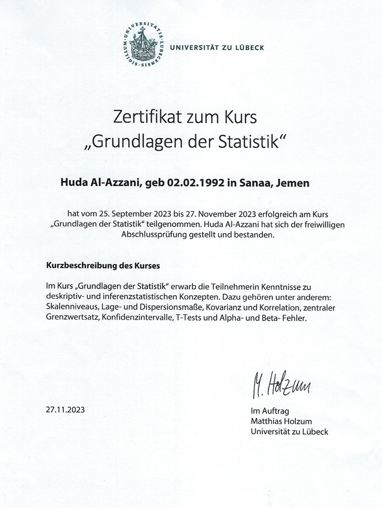
Germany
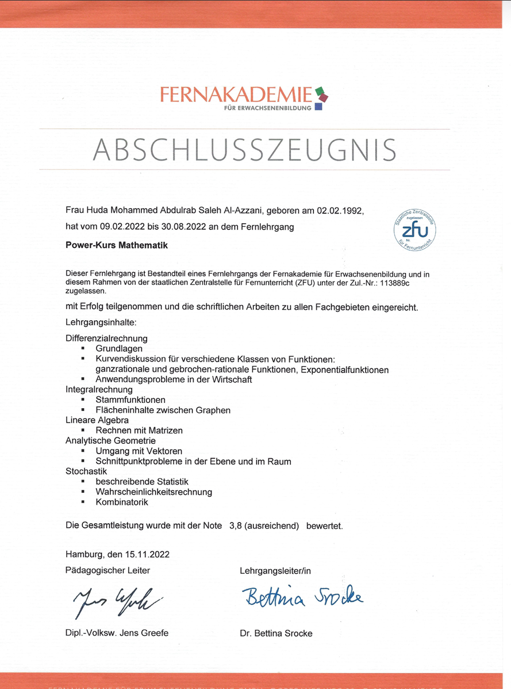
Germany
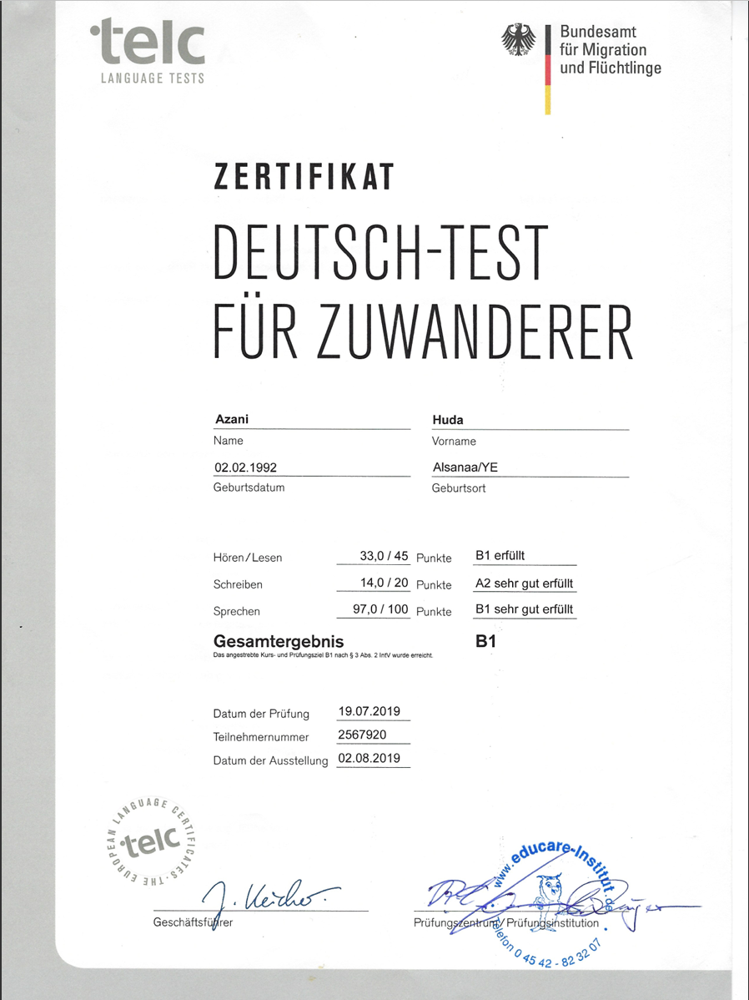
Germany
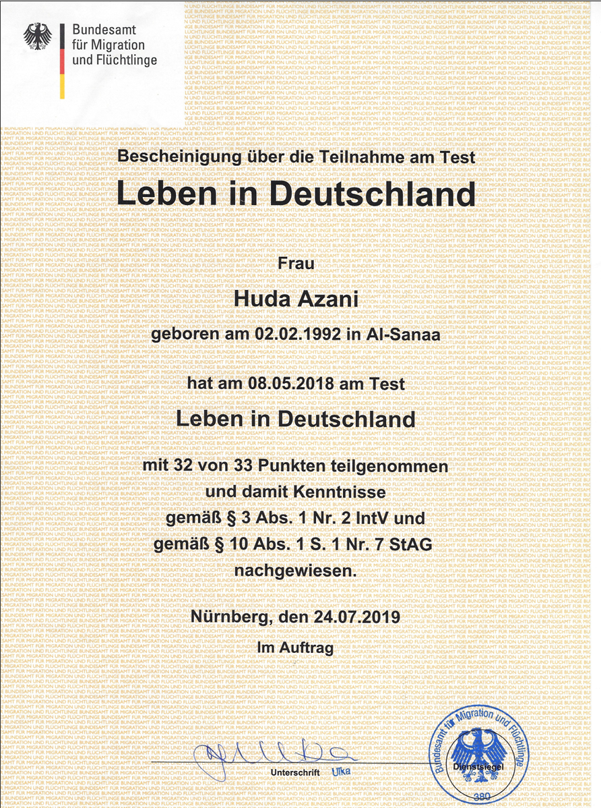
Germany
Für Recruiter, Personalverantwortliche, Kooperationspartner oder interessante technische Möglichkeiten — ich freue mich auf Ihre Kontaktaufnahme.